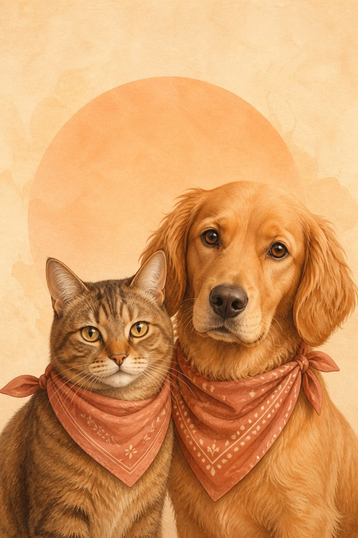

SAFE TRIAGE · 猫狗健康分流
先判断急不急，再把症状说清楚
从危险信号、宠物信息到症状变化，一步步整理真正影响就医判断的线索。结果告诉你下一步行动，也能直接复制给兽医沟通。
危险信号由规则优先处理
不做诊断和处方
目前仅支持猫和狗

三段行动分流RULE SET 01
观察记录变化
联系尽快咨询
急诊不要等待
CHOOSE A PATH
你现在遇到哪种情况？
选最接近的一项即可。状态明显恶化或拿不准是否紧急时，优先联系执业兽医。
SAFETY BY DESIGN
温和，但不把风险说轻
咪咕医生给的是行动提示和就医准备，不是疾病结论。
01 / RULE FIRST高危规则优先
明确危险信号不交给模型决定，也不会先让你等待回复。
02 / HANDOFF可以复制给兽医
把宠物资料、症状变化和补充回答整理成沟通摘要。
03 / PRIVACY草稿 24 小时过期
信息暂存在当前浏览器，可随时清除；提交前会说明模型处理。
04 / BOUNDARY不诊断、不处方
不提供药物剂量、催吐方式或替代线下检查的建议。